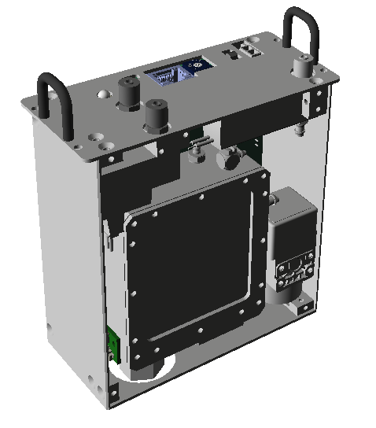

Pressure Controller
The Pressure Controller ensures consistent ink pressure for optimal print quality in industrial inkjet applications.
MPC7

independent 7-channel pressure controller for backpressure and purge
pressure control
MPC7 has pressure generators inside for purge and backpressure
control.
MPC with peristaltic pump

Single peristaltic pump can provide backpressure and purge pressure control.
Read More...Integrated Ink Tanks
Ink tanks with recirculation ensure a consistent ink supply and prevent drying in industrial inkjet printing applications.
P7 integrated ink tank

ethernet communication for simple installation
ink tank with integrated recirculation system
integrated pressure controller to provide consistent ink pressure
ink pressure sensor and ink level sensor
P5 integrated ink tank

ethernet communication for simple installation
ink tank with integrated recirculation system
integrated pressure controller to provide consistent ink pressure
ink pressure sensor and ink level sensor